Jungwon Choi 최중원
I am a Ph.D. student at KAIST AI, working in the Statistical Inference and Machine Learning Lab (SIML) under the supervision of Prof. Juho Lee.
My current research focuses on multimodal large language models, addressing real-world challenges such as efficient full-duplex interaction and learning with missing modalities. I also work on generative modeling and healthcare AI, with applications spanning brain imaging, computational pathology, and disease surveillance.
Open to research internships and collaborations.
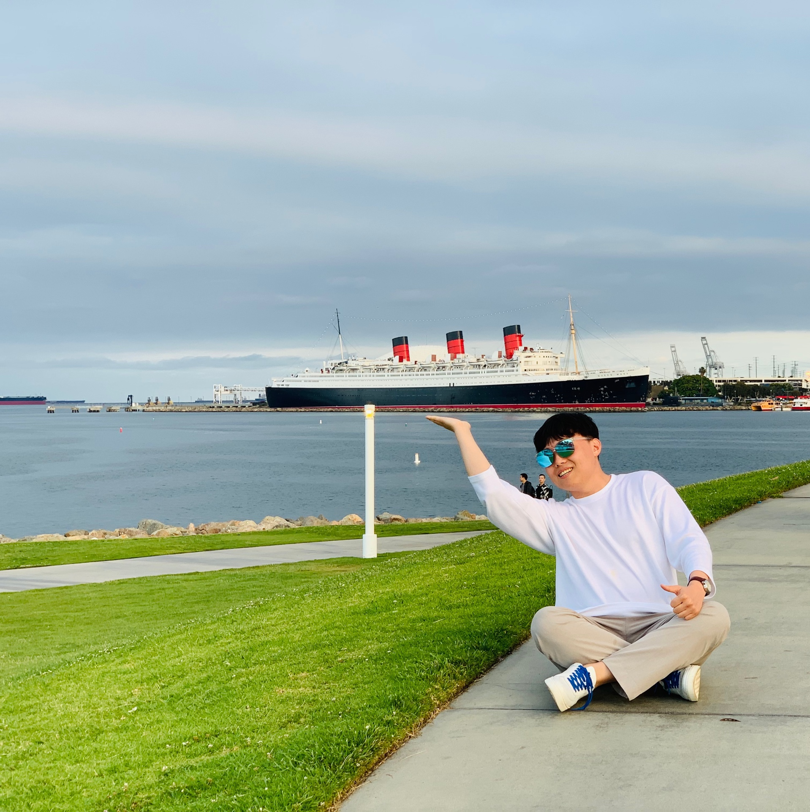
News
| Sep 2026 | One paper accepted to NeurIPS 2026! |
|---|---|
| Jul 2026 | One paper accepted to ICML 2026 SD4H Workshop! |
| Mar 2026 | Two papers accepted to ICLR 2026 Workshops (Re-Align; Trustworthy AI)! |
| Jan 2026 | Two papers accepted to ICLR 2026! |
| Dec 2025 | One paper accepted to WACV 2026 LFMBio Workshop (Oral)! |
Earlier news
| Dec 2024 | Excellence Award – First Place, Seoul AI Hub (AI+Healthcare)! |
|---|---|
| Sep 2024 | One paper accepted to NeurIPS 2024! |
| Feb 2024 | One paper accepted to ISBI 2024 (Oral)! |
| Oct 2023 | Two papers accepted to NeurIPS 2023 TGL Workshop! |
| Dec 2022 | One paper accepted to AAAI 2023 Bridge Program (Oral)! |
| Sep 2022 | One paper accepted to NeurIPS 2022! |
Publications
* Equal contribution
2026
-
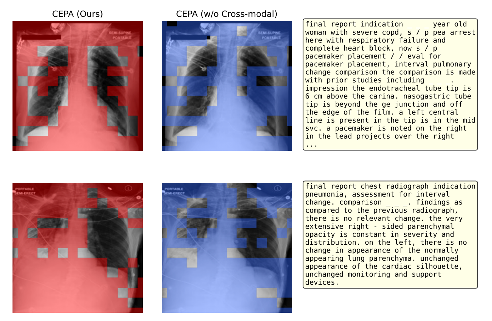
Context-Aware Generative Imputation for Robust Multimodal Learning in Missing Modality Scenarios -
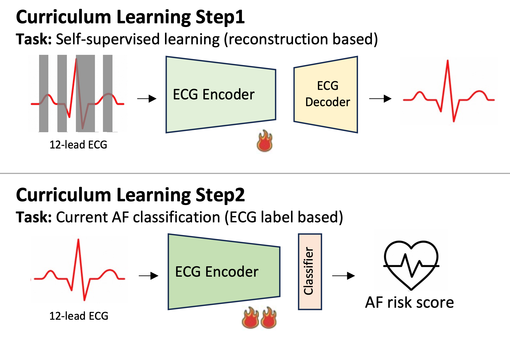
Impact of an AI algorithm for multi-day prediction of incident atrial fibrillation on clinical decision-making: PROVISION-AF study -
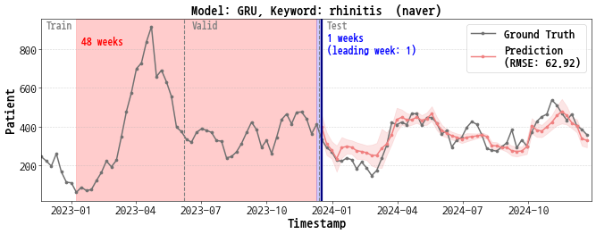
Can Symptom Search Trends Forecast Respiratory Virus Patient Counts? A Rhinovirus Case Study in Korean Syndromic SurveillanceExploring symptom search trends as signals for forecasting respiratory virus patient counts.
-
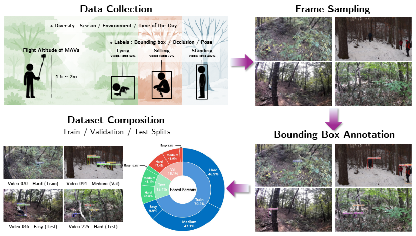
ForestPersons: A Large-Scale Dataset for Under-Canopy Missing Person Detection -
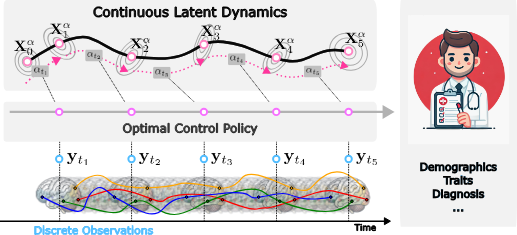
Stochastic Optimal Control for Continuous-Time fMRI Representation Learning -
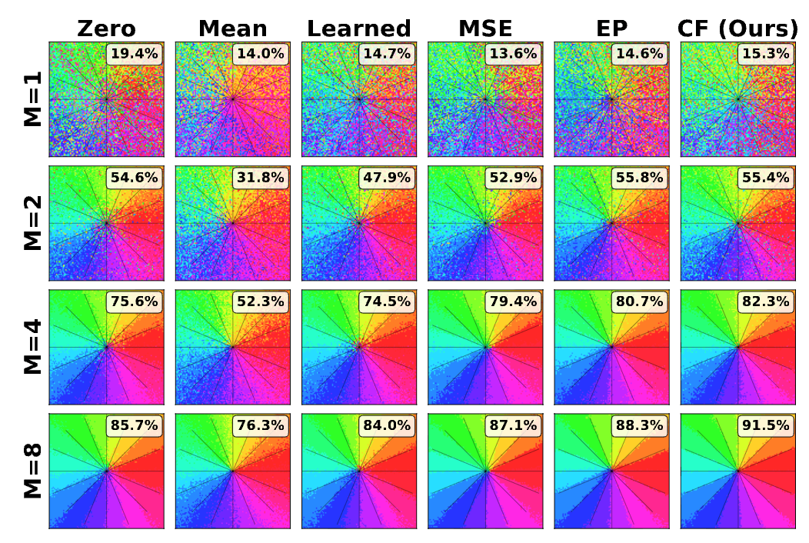
Preventing Representation Collapse in Latent Prediction via Context-Conditional Alignment under Missing Modalities -
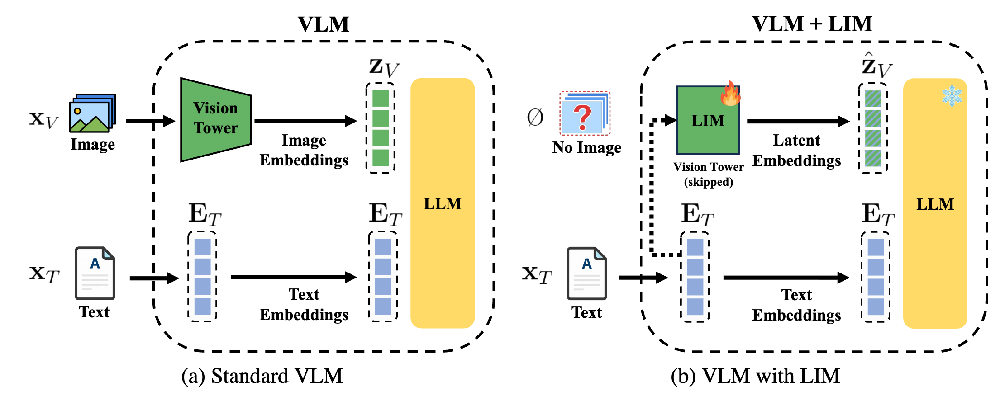
Bridging the Missing-Modality Gap: Improving Text-Only Calibration of Vision Language Models -
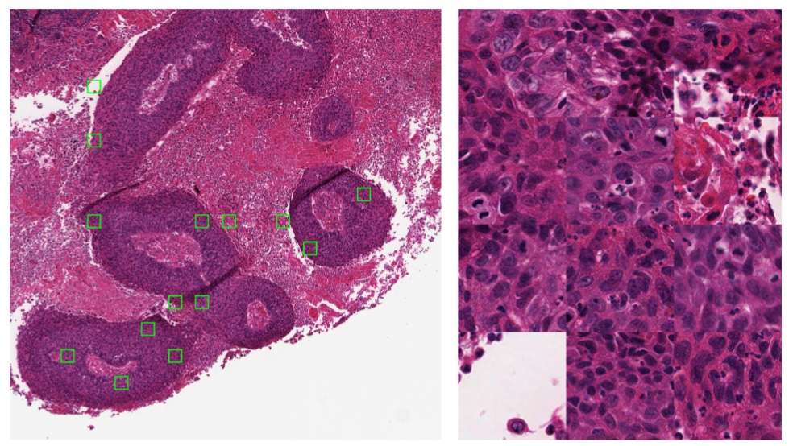
2024
-
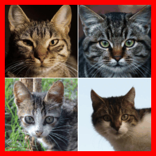
-
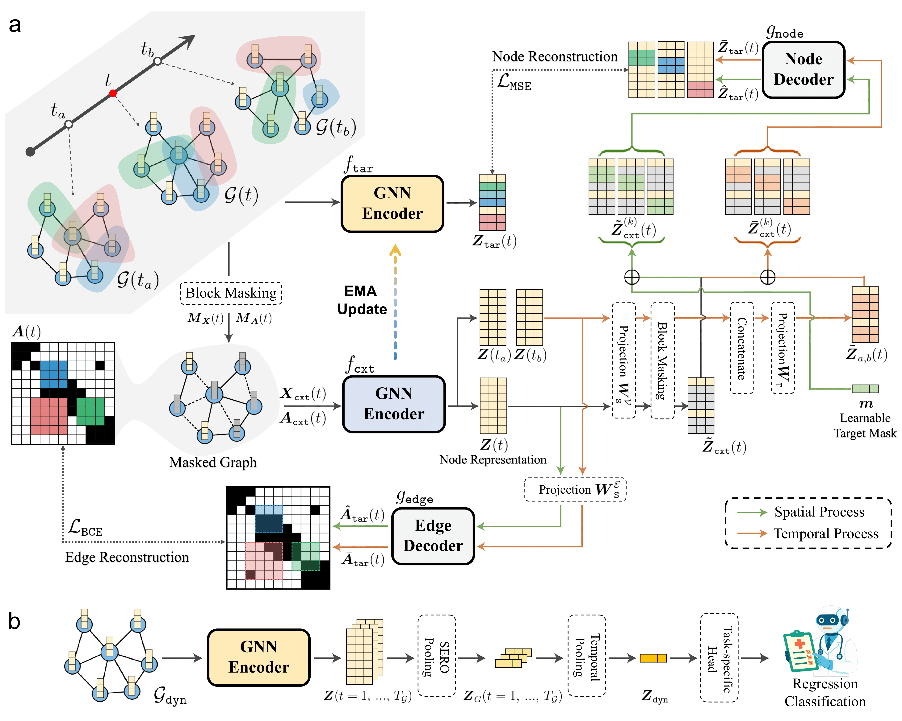
Joint-Embedding Masked Autoencoder for Self-supervised Learning of Dynamic Functional Connectivity from the Human Brain -
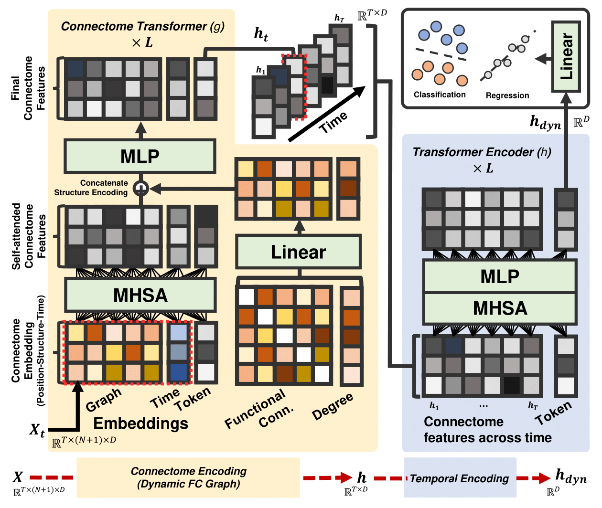
Learning Dynamic Brain Connectome with Graph Transformers for Psychiatric Diagnosis Classification
2023
-
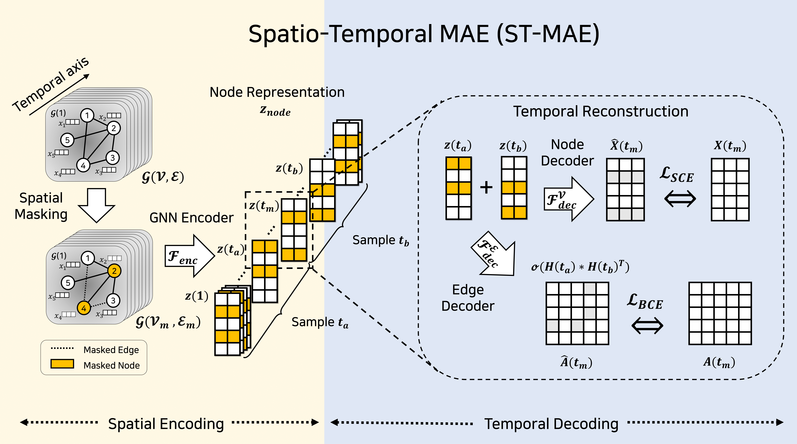
-
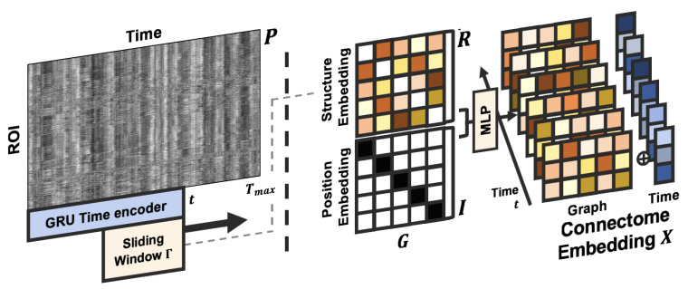
-
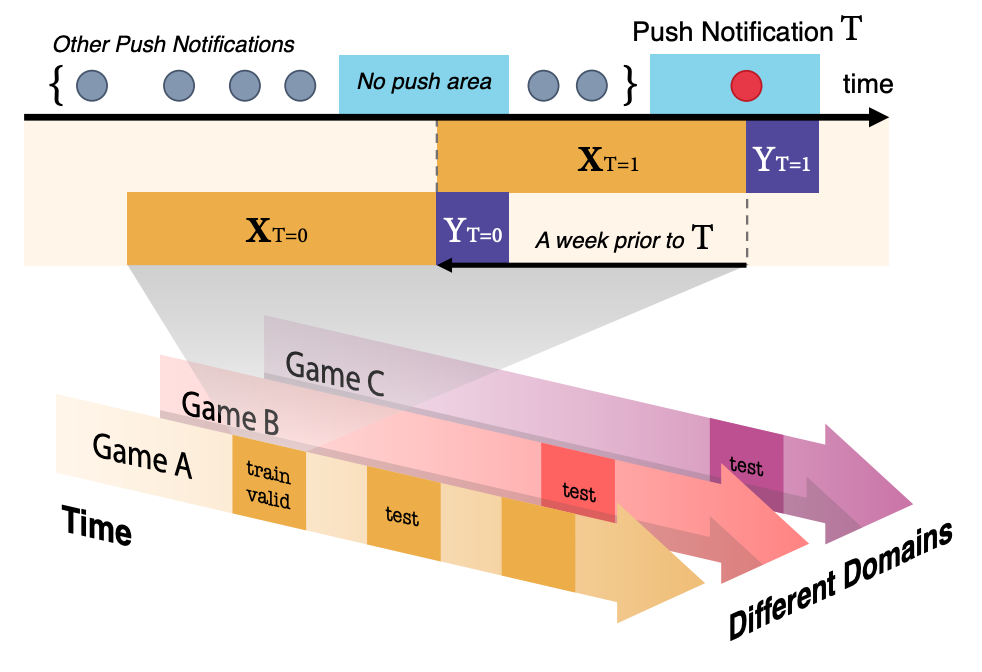
2022
-
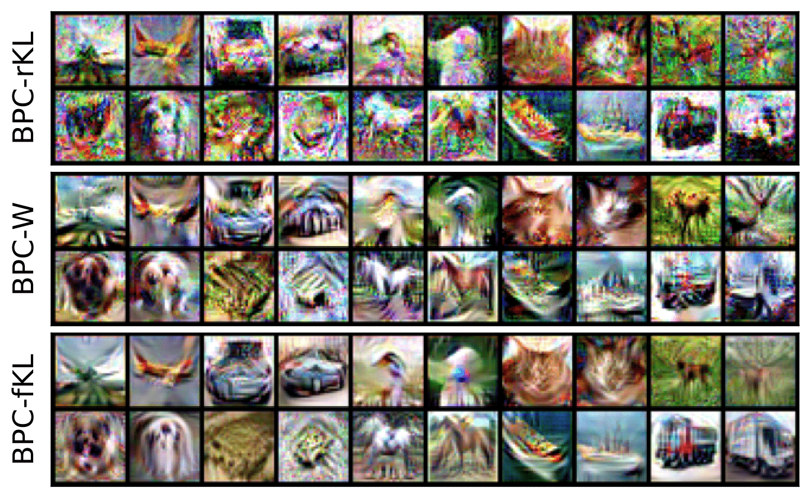
2021
-
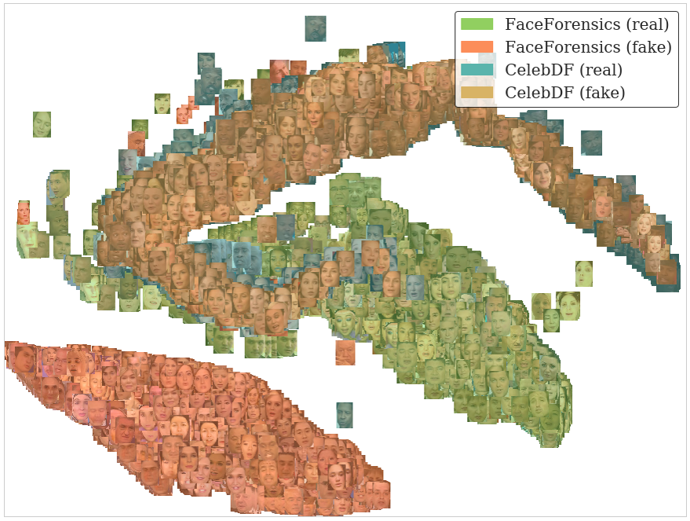
Robust Deepfake Detection via Invariant Feature Learning
Honors & Awards
-
Excellence Award – First Place, Seoul AI Hub (AI+Healthcare)Dec 2024Syndromic surveillance of respiratory viruses using symptom search data.
-
Excellence Award, SKT AI FellowshipNov 2021Detection of GAN-generated images in collaboration with SK Telecom.
-
Dean's List with Merit-based Scholarship, Inha UniversityMar 2013 – Feb 2019Merit-based scholarships every semester; ranked 2nd in the department.
-
Excellence Award, 5th Software Convergence Hackathon of Republic of KoreaSep 2018AI-based service prototype; award granted by the Governor of Jeollanam-do.
Academic Services
- Machine Learning (Springer Nature)
- IEEE Transactions on Medical Imaging
- Medical Image Analysis
- IEEE Open Journal of the Computer Society
- ICLR2025–2027
- AAAI2027
- ICML2025–2026
- NeurIPS2026
- ECCV2026
- ICLR2025–2027
- AAAI2027
- ICML2025–2026
- NeurIPS · ECCV2026
Education
-
KAIST AIMar 2021 – PresentPhD in Artificial Intelligence · Advisor: Juho Lee
-
KAIST EEMar 2019 – Feb 2021MS in Electrical Engineering · Advisor: Dae-Shik Kim
-
INHA UniversityMar 2013 – Feb 2019BS in Electronic Engineering · Summa Cum Laude (4.33/4.5) · Advisor: Bowon Lee
-
University of California, RiversideJan 2017Overseas Regional Studies Program